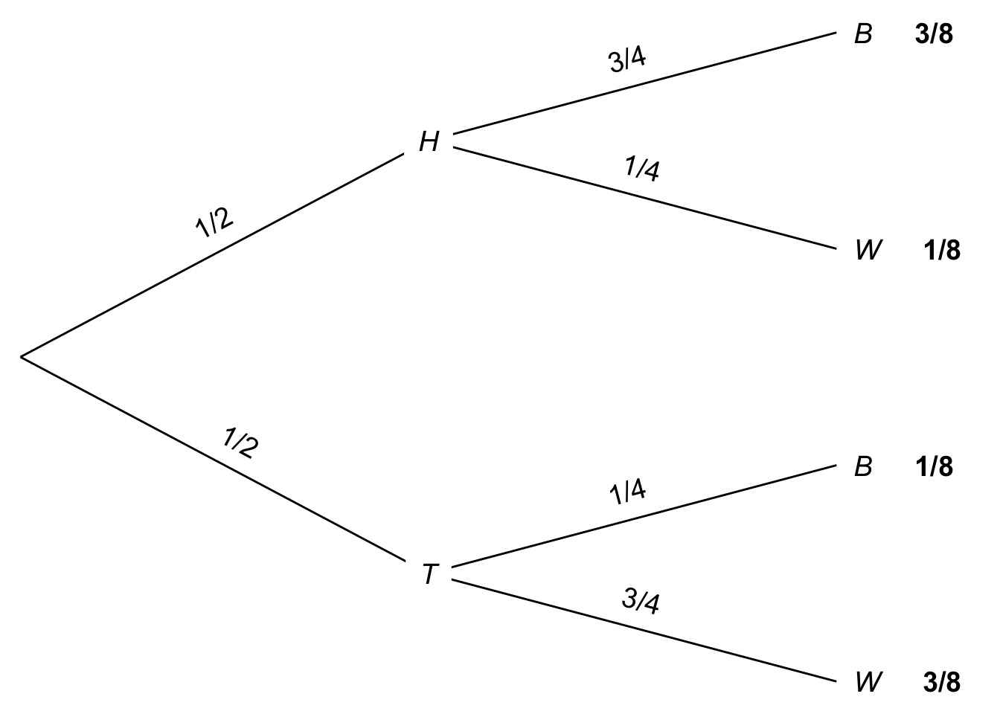
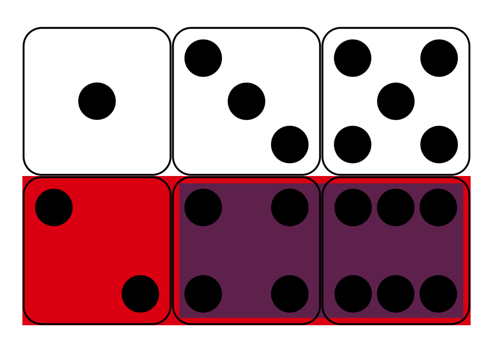
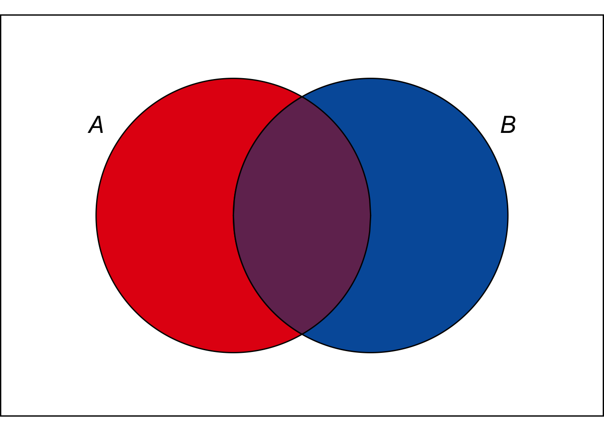
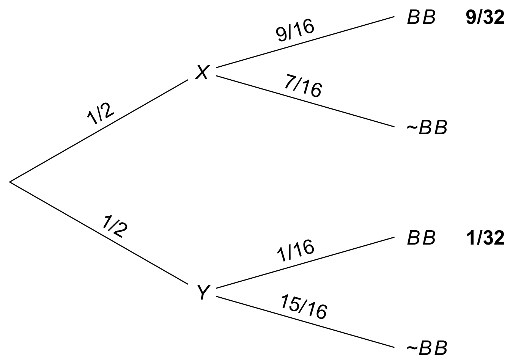

The chances of crashing your car are pretty low, but they’re considerably higher if you’re drunk. Probabilities change depending on the conditions.
We symbolize this idea by writing \(\p(A \given B)\), the probability that \(A\) is true given that \(B\) is true. And we call this kind of probability conditional probability.
To say \(B\) increases the chance of \(A\) we write \(\p(A \given B) \gt \p(A)\). And to say \(B\) doubles the chance of \(A\) write \(\p(A \given B) = 2 \times \p(A)\).
For example, to say the probability of \(A\) given \(B\) is 30%, we write: \[ \p(A \given B) = .3. \] But how do we calculate conditional probabilities?
 Figure 6.1: Conditional probability in a fair die roll
Suppose I roll a fair, six-sided die behind a screen. You can’t see the result, but I tell you it’s an even number. What’s the probability it’s also a “high” number: either a \(4\), \(5\), or \(6\)?
Maybe you figured the correct answer: \(2/3\). But why is that correct? Because, out of the three even numbers (\(2\), \(4\), and \(6\)), two of them are high (\(4\) and \(6\)). And since the die is fair, we expect it to land on a high number \(2/3\) of the times it lands on an even number.
This hints at a formula for \(\p(A \given B)\).
\[ \p(A \given B) = \frac{\p(A \wedge B)}{\p(B)}. \]
In the die-roll example, we considered how many of the \(B\) possibilities were also \(A\) possibilities. Which means we divided \(\p(A \wedge B)\) by \(\p(B)\).
In fact, this formula is our official definition for the concept of conditional probability. When we write the sequence of symbols \(\p(A \given B)\), it’s really just shorthand for the fraction \(\p(A \wedge B) / \p(B)\).
 Figure 6.2: Conditional probability is the size of the \(A \wedge B\) region compared to the entire \(B\) region.
In terms of an Euler diagram (Figure 6.2), the definition of conditional probability compares the size of the purple \(A \wedge B\) region to the size of the whole \(B\) region, purple and blue together. If you don’t mind getting a little colourful with your algebra: \[ \p(A \given B) = \frac{\color{bookpurple}{\blacksquare}}{\color{bookpurple}{\blacksquare} + \color{bookblue}{\blacksquare}}. \] So the definition works because, informally speaking, \(\p(A \wedge B)/\p(B)\) is the proportion of the \(B\) outcomes that are also \(A\) outcomes.
Dividing by zero is a common pitfall with conditional probability. Notice how the definition of \(\p(A \given B)\) depends on \(\p(B)\) being larger than zero. If \(\p(B) = 0\), then the formula The comedian Steven Wright once quipped that “black holes are where God divided by zero.” \[ \p(A \given B) = \frac{\p(A \wedge B)}{\p(B)} \] doesn’t even make any sense. There is no number that results from the division on the right hand side.3 There are alternative mathematical systems of probability, where conditional probability is defined differently to avoid this problem. But in this book we’ll stick to the standard system. In this system, there’s just no such thing as “the probability of \(A\) given \(B\)” when \(B\) has zero probability.
In such cases we say that \(\p(A \given B)\) is undefined. It’s not zero, or some special number. It just isn’t a number.
We already encountered conditional probabilities informally, when we used a tree diagram to solve the Monty Hall problem.
In a tree diagram, each branch represents a possible outcome. The number placed on that branch represents the chance of that outcome occurring. But that number is based on the assumption that all branches leading up to it occur. So the probability on that branch is conditional on all previous branches.
For example, suppose there are two urns of coloured marbles:
I flip a fair coin to decide which urn to draw from, heads for Urn X and tails for Urn Y. Then I draw one marble at random.
Figure 6.3: Tree diagram for an urn problem
The probability of drawing a black marble on the top path is \(3/4\) because we are assuming the coin landed heads, and thus I’m drawing from Urn X. If the coin lands tails instead, and I draw from Urn Y, then the chance of a black marble is instead \(1/4\). So these quantities are conditional probabilities: \[ \begin{aligned} \p(B \given H) &= 3/4,\\ \p(B \given T) &= 1/4. \end{aligned} \]
Notice, though, the first branch in a tree diagram is different. In the \(H\)-vs.-\(T\) branch, the probabilities are unconditional, since there are no previous branches for them to be conditional on.
Imagine an urn contains marbles of three different colours: 20 are red, 30 are blue, and 40 are green. I draw a marble at random. What is \(\p(R \given \neg B)\), the probability it’s red given that it’s not blue? \[ \begin{aligned} \p(R \given \neg B) &= \frac{\p(R \wedge \neg B)}{\p(\neg B)}\\ &= \frac{\p(R)}{\p(\neg B)}\\ &= \frac{20/90}{60/90}\\ &= 1/3. \end{aligned} \] This calculation relies on the fact that \(R \wedge \neg B\) is logically equivalent to \(R\). A red marble is automatically not blue, so \(R\) is true under exactly the same circumstances as \(R \wedge \neg B\). The Equivalence Rule thus tells us \(\p(R \wedge \neg B) = \p(R)\).
Suppose a university has 10,000 students, and each student is studying under one of four broad headings: Humanities, Social Sciences, STEM, or Professional. Within each of these categories, the number of students with an average grade of A, B, C, or D is as follows:
| Humanities | Social Sciences | STEM | Professional | |
|---|---|---|---|---|
| A | 200 | 600 | 400 | 900 |
| B | 500 | 800 | 1600 | 900 |
| C | 250 | 400 | 1500 | 750 |
| D | 50 | 200 | 500 | 450 |
What is the probability a randomly selected student will have an A average, given that they are studying either Humanities or Social Sciences? \[ \begin{aligned} \p(A \given H \vee S) &= \frac{\p(A \wedge (H \vee S))}{\p(H \vee S)}\\ &= \frac{800/10,000}{3,000/10,000}\\ &= 4/15. \end{aligned} \]
What about the reverse probability, that a student is studying either Humanities or Social Sciences given that they have an A average? \[ \begin{aligned} \p(H \vee S \given A) &= \frac{\p((H \vee S) \wedge A)}{\p(A)}\\ &= \frac{800/10,000}{2,100/10,000}\\ &= 8/21. \end{aligned} \] Notice how we get a different number now.
In general, the probability of \(A\) given \(B\) will be different from the probability of \(B\) given \(A\). These are different concepts.
For example, university students are usually young, but young people aren’t usually university students. Most aren’t even old enough to be in university. So the probability someone is young given they are in university is high. But the probability someone is in university given that they are young is low. So \(\p(Y \given U) \neq \p(U \given Y)\).
Once in a while we do find cases where \(\p(A \given B) = \p(B \given A)\). For example, suppose we throw a dart at random at a circular board, divided into four quadrants. The chance the dart will land on the left half given that it lands on the top half is the same as the chance it lands on the top half given it lands on the left. Both probabilities are \(1/2\).
But this kind of thing is the exception rather than the rule. Usually, \(\p(A \given B)\) will be a different number from \(\p(B \given A)\). So it’s important to remember how order matters.
When we write \(\p(A \given B)\), we are discussing the probability of \(A\). But we are discussing it under the assumption that \(B\) is true.
We explained independence informally back in Chapter 4: \(A\) and \(B\) are independent if the truth of one doesn’t change the probability of the other. Now that we’ve formally defined conditional probability, we can formally define independence too.
\(A\) is independent of \(B\) if \(\p(A \given B) = \p(A)\) and \(\p(A) > 0\).
In other words, they’re independent if \(A\)’s probability is the same after \(B\) is given as it was before (and not just for the silly reason that there was no chance of \(A\) being true to begin with).
Now we can establish three useful facts about independence.
The first is summed up in the mantra “independence means multiply”. This actually has two parts.
We already learned the first part with the Multiplication Rule: if \(A\) is independent of \(B\), then \(\p(A \wedge B) = \p(A)\p(B)\). Except now we can see why this rule holds, using the definition of conditional probability and some algebra: \[ \begin{aligned} \p(A \given B) &= \frac{\p(A \wedge B)}{\p(B)} & \mbox{by definition}\\ \p(A \given B)\p(B) &= \p(A \wedge B) & \mbox{by algebra}\\ \p(A)\p(B) &= \p(A \wedge B) & \mbox{by independence}. \end{aligned} \]
The second part of the “independence means multiply” mantra is new though. It basically says that the reverse also holds. As long as \(\p(A) > 0\) and \(\p(B) > 0\), if \(\p(A \wedge B) = \p(A)\p(B)\), then \(A\) is independent of \(B\).
Bottom line: as long as there are no zeros to worry about, independence is the same thing as \(\p(A \wedge B) = \p(A)\p(B)\).
Second, independence is symmetric. If \(A\) is independent of \(B\) then \(B\) is independent of \(A\). Informally speaking, if \(B\) makes no difference to \(A\)’s probability, then \(A\) makes no difference to \(B\)’s probability.
This is why we often say “\(A\) and \(B\) are independent”, without specifying which is independent of which. Since independence goes both ways, they’re automatically independent of each other.
Third, independence extends to negations. If \(A\) is independent of \(B\), then it’s also independent of \(\neg B\) (as long as \(\p(\neg B) > 0\), so that \(\p(A \given \neg B)\) is well-defined).
Notice, this also means that if \(A\) is independent of \(B\), then \(\neg A\) is independent of \(\neg B\) (as long as \(\p(\neg A) > 0\)).
So far our definition of independence only applies to two propositions. We can extend it to three as follows:
\(A\), \(B\), and \(C\) are independent if
In other words, a trio of propositions is independent if each pair of them is independent, and the multiplication rule applies to their conjunction. The same idea can be extended to define independence for four propositions, five, etc.
Answer each of the following:
Suppose \(\p(B) = 4/10\), \(\p(A) = 7/10\), and \(\p(B \wedge A) = 2/10\). What are each of the following probabilities?
Five percent of tablets made by the company Ixian have factory defects. Ten percent of the tablets made by their competitor company Guild do. A computer store buys \(40\%\) of its tablets from Ixian, and \(60\%\) from Guild.
This exercise and the next one are based on very similar exercises from Ian Hacking’s wonderful book, An Introduction to Probability and Inductive Logic.
Draw a probability tree to answer the following questions.
In the city of Elizabeth, the neighbourhood of Southside has lots of chemical plants. \(2\%\) of Elizabeth’s children live in Southside, and \(14\%\) of those children have been exposed to toxic levels of lead. Elsewhere in the city, only \(1\%\) of the children have toxic levels of exposure.
Draw a probability tree to answer the following questions.
Imagine 100 prisoners are sentenced to death. 70 of them are housed in cell block A, the other 30 are in cell block B. Of the prisoners in cell block A, 9 are innocent. Only 1 prisoner in cell block B is innocent.
The law requires that one prisoner be pardoned. The lucky prisoner will be selected by flipping a fair coin to choose either cell block A or B. Then a fair lottery will be used to select a random prisoner from the chosen cell block.
What is the probability the pardoned prisoner comes from cell block A if she is innocent? Answer each of the following to find out.
\(I\) = The pardoned prisoner is innocent.
\(A\) = The pardoned prisoner comes from cell block A.
Suppose \(A\), \(B\), and \(C\) are independent, and they each have the same probability: \(1/3\). What is \(\p(A \wedge B \given C)\)?
If \(A\) and \(B\) are mutually exclusive, what is \(\p(A \given B)\)? Justify your answer using the definition of conditional probability.
Which of the following situations is impossible? Justify your answer.
Is the following statement true or false: if \(A\) and \(B\) are mutually exclusive, then \(Pr(A \vee B \given C) = Pr(A \given C) + Pr(B \given C)\). Justify your answer.
Justify the second part of the “independence means multiply” mantra: if \(\p(A) > 0\), \(\p(B) > 0\), and \(\p(A \wedge B) = \p(A) \p(B)\), then \(A\) is independent of \(B\).
Hint: start by supposing \(\p(A) > 0\), \(\p(B) > 0\), and \(\p(A \wedge B) = \p(A)\p(B)\). Then apply some algebra and the definition of conditional probability.
Justify the claim that independence is symmetric: if \(A\) is independent of \(B\), then \(B\) is independent of \(A\).
Hint: start by supposing that \(A\) is independent of \(B\). Then write out \(\p(A \given B)\) and apply the definition of conditional probability.